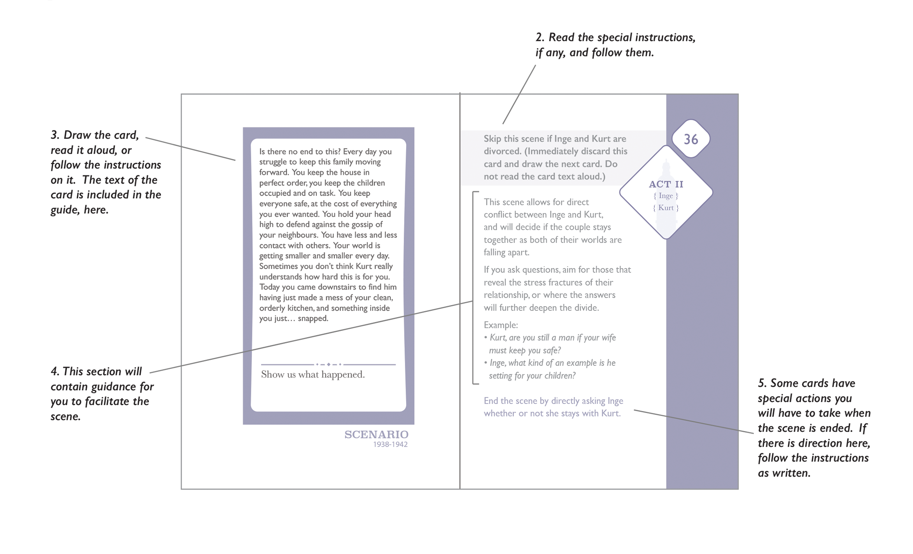

Beginning with the player to your left, ask each person to say their name, and tell the group how they first learned about the Holocaust. Go around the circle and end with yourself. If you wish, you may also briefly tell the group why you chose to run this scenario.
By asking players to discuss their personal relationship to the Holocaust, this workshop helps calibrate the group’s expectations for how players may engage with the material.
Additionally, the Holocaust shaped the lives of multiple generations of Jews, even those whose families were not personally affected. If Jewish players are present, this workshop can help set the tone for the game, and serve as a reminder that the Holocaust is still present in the lives of many Jews today. Some players may answer the question more broadly than it is written. For example, Jewish players often speak about their connection to Judaism or the effect the Holocaust had on their family.
Players might also talk about their connection to genocide more broadly. As long as what they are talking about aligns with the goal of this work- shop, it is appropriate. If a player diverges from these topics, gently bring them back to focus on the game.
Let the players know that in the game they will have two characters to play. One character will be male, and one will be female. Each character will be involved in a significant relationship (a husband, wife, brother or sister) with another player’s character. To determine who should play which character, you will be running a short series of line-ups.
Have all players stand side by side in a straight line. Tell them you will be asking them a few questions, and will designate what each end of the line means. Then they will need to find the place on that line where they as a player fit. Ensure everyone understands how this works by doing a quick test run - you will ask them to line according to their age. Point to the left side of the room and tell them that that end of the line is older. Point to the right side and tell them that that side of the line is younger. Let them self-arrange into a line-up. At any time, if players all clump up in one spot, make them straighten the line. Once you are sure that everyone understands what they need to do, proceed to call for the lineups below.
1. This lineup is about how comfortable you are playing a character whose storyline involves the serious illness of a child. Going this way (point left) means that you strongly would not want to play that kind of story. Going that way (point right) means that you think it would be interesting to play that kind of story. Position yourself on the line where you are comfortable. Write down the order. (Note: if for some reason all players indicate that they strongly would not want to play in that story, identify for them that this subject matter is limited to a short portion of the scenario, and ask them to repeat the line-up with the directions more comfortable, less comfortable.)
2. This next lineup is about how comfortable you are playing a character that you as a player may consider morally challenging. Going this way (point left) means that you strongly would not want to play that kind of character. Going that way (point right) means that you think it would be interesting to play that kind of character. Position yourself on the line where you are comfortable. Write down the order.
3. The next question is about the kinds of characters you like to play. Would you prefer to play a character who responds to the world more intellectually (point left) or more emotionally (point right). Write down the order.
4. And lastly, would you prefer to play a character that is highly vulnerable (point left) or less vulnerable (point right)? Write down the order.
Now assign characters according to this process:
1. Assign both Izak and Anneliese to a player who is not adverse to playing a story with risk to children, and who would prefer to play a more vulnerable character.
2. Assign both Kurt and Klara to the remaining player who is most comfortable with playing a character with difficult moral perspectives.
3. Assign both Josef and Inge to the remaining player who more strongly prefers to play characters that approach the world intellectually.
4. Assign both Max and Ruth to the final player.
Note: if for some reason the options available to you do not allow you to follow the process above, use your best judgement based on your observations of the group, but be sure to assign them according to the character pairs identified above.
Note that all character genders are fixed, and must be played as the gender written.
Before beginning play, review the principles of the game with players. Read each principle and its explanatory text aloud, then ask the group if they have questions. These principles should guide both the players and your own behavior as a Director.
- Be players, not historians. During play, your job is to explore your characters’ experience and be emotionally authentic. You do not need to have extensive knowledge of the history in order to play. If you do have such knowledge, put it to one side and focus on the daily experiences of your characters.
- No superheroics. The characters in this game are ordinary people living under a totalitarian, oppressive regime. Even mild resistance can have deadly consequences. Characters can control the way they respond to the situation they are living in, but do not have the power to change it.
- Player transparency, Director secrecy. Players, you can share anything in your game materials either in or out of character. Be aware that the Director will be secretly tracking some of the actions you take during the game, just as the Nazi regime spied on its citizens.
- We are more important than the game. The game material may be highly personal and painful for some players. You have already heard about people’s histories with the Holocaust. While this game does not shy away from difficult material, be respectful of the human beings in this room as you engage with it.
Agency
In this scenario, players do not have a great deal of agency to affect the world around them. Players cannot effectively resist the Nazi regime until the protest in collective action. They can occasionally change their personal circumstances, and those situations are clearly marked. During the rest of the game, they should be focused on their character ís personal relationships, on their sense of self and inner feelings, and how they negotiate living in exceptionally difficult circumstances. The primary responsibility of the Director in this game is to read and calibrate the emotional intensity of the players by asking questions that facilitate emotional exploration.
The pre-written scenes for this scenario emphasize these factors. In many of these scenes, you will have the opportunity to follow up with questions that deepen the players’ experience. Later in this booklet, you will find suggestions for how to do this for particular scenes, and examples of questions you might ask. In all cases, however, you should keep in mind that your questions should help the characters reveal their inner feelings, expose or demonstrate their relationships, or connect to daily life.
Be wary of asking questions that invite superheroics, provide opportunity to change the narrative course, or that are disconnected from the daily experiences of characters’ lives.
It is possible that your players will try to break the tone of the game, either because they are accustomed to games where the characters have a great deal of freedom or as a response to difficult feelings they, as a player, may be having. If this happens, gently intercede. Do not accept the contribution into the fiction of the game. Explain that their proposed action does not fit this scenario, reminding them of the principles of play if necessary, and ask them to try again.
Dyads
This scenario centers not on individual characters, but rather on dyads - three husband-wife pairs, and one brother-sister pair. Each player portrays a male and a female character from different dyads, and each dyad involves two of the four players.
These dyads are the heart of the game. As such, keep in mind the following:
- The two players in a dyad should be seated next to one another, so that they can engage closely and intimately during their scenes. If this is not possible, ask the active players to leave their seats and stand next to one another while they play.
- A given player will sometimes be portraying the male half of one dyad, and sometimes the female half of another. Character sheets have names on the back, and can be used to show which character is being portrayed. Once yellow stars have been given out, they should be worn in play as appropriate. Players may also want to use personal items, such as a scarf, to improvise costumes that differentiate between their characters.
- Some scenes are directed at only one half of a given dyad. However, both players for that dyad should switch to the appropriate character when either character is in play.
It is strongly recommended that you read through the whole scenario before attempting to run the game for others. There are certain points where character decisions will affect the outcome of the story and as a result special management of the game materials will be needed. Understanding the courses that the narrative will take will be important to the ease of running the game.
Game Components
This scenario makes use of a variety of components:
- Character Sheets which are distributed to and managed by the players.
- This Director Guide is the complete, compiled text. It contains workshop instructions, directions and advice and a scene-by-scene guide for running the game. You will work primarily from the guide as you facilitate.
- The Rosenstrasse Deck is a deck of cards. The Director will manage the deck following the instructions provided in the guide. There are three kinds of cards in this game. Each of them are colour coded for easy differentiation and they are numbered for easy re-ordering. The card types are below:
- Scenario cards describe scenes. Some scenario cards are conditional depending on player decisions. The guide will clearly identify those scenes and provide specific directions based on content. Some scenario cards are for you, the Director; typically, you will read a short narration from the card, and you may also have other tasks to perform. Follow the instructions in the Director Guide.
- Update cards. Update cards are distributed to players between acts, to provide new information about their characters. Like the conditional scenario cards, the guide provides warnings and directions for these.
- Complicity cards. Complicity cards are scenes that are not played but are described in response to questions as if they occurred in the past. Unlike all other cards, they are run by the players. Complicity cards are drawn in pairs and given to a particular player as described in the guide. That player then reads both cards silently and chooses one to inflict on the character named.
- A Risk Matrix that is managed and viewable only by the Director.
- A set of Yellow Stars to be distributed by the Director when directed by a card. From that point forward, the star is to be worn by the player when playing the character it was given to.
- A set of Postcards that are used by the Director and players as part of the Epilogue.
- A timeline which is not actively used in game, but is available to the players for reference.[3][4][5][6]
- Sound files that can be used to enhance the experience of the game (optionally).
The Director may also want to have a few pieces of gendered clothing, such as a manís cap or a few scarves, for the players to use while playing. This is entirely optional, but does assist some players in shifting back and forth between their main characters, especially if they have not played in a game where they played more than one invested player character at a time.
Direction Process
In general, this Director’s Guide is the central document that you will work from. All of the cards in the deck are mirrored in the book, along with specific guidance for you related playing the scene.
1. You should always start by going to the next page in the guide.
2. Check to see if there is any special instruction for the next event. If so, read the instructions, and follow them.
3. Once the instructions are taken care of, draw the card from the deck. The text on the card is always mirrored in the left hand page of the book for your reference.
a. For Update and Complicity cards, do not read the card aloud. Hand the card to the indicated player.
b. For Scenario cards that target a player, read the card text aloud. Then hand the card to the appropriate player or players for their reference during play.
c. For Scenario cards that target you, the Director, read the card aloud and follow the directions in this guide. Do not give cards marked Director to the players.
4. For each card, Director advice or directions are located on the right side of the spread. This includes information related to characters you will play, or suggestions on how to emotionally calibrate the experience of play by asking questions.
5. Check to see if there is any special action that should be taken after the scene is over. If so, follow the instructions as written.
6. Move to the next page in the guide.
During the game, characters will take actions that change their legal status, and that make them more or less vulnerable to attack by the Nazi regime. Use the risk matrix to track the decisions the characters make.
Actions that make characters more or less vulnerable include:
- Being identified as a Jew.
- Being identified as a Mischling (mixed race).
- Being registered with the Jewish community.
- Being married to an Aryan woman.
- Being married to a (known) Mischling.
- Having children who were baptized before 1935.
- Getting in trouble with the regime.
- Working as an orderly for the Nazi regime.
Do not show the risk matrix to the players. Do not explain why you are marking the document, unless directed otherwise in the instructions. Players should feel that they are being watched and judged by rules they do not fully understand. Many of the items on the risk matrix are connected to specific choices presented to characters in the game. However, you should feel free to use ìGetting in trouble with the regimeî at your discretion. Vulnerable men who engage in public defiance or resistance, who engage in violence, or draw attention to themselves are accumulating risk.
The risk matrix is used at the beginning of Act III to determine the fate of the male characters. If a card or an event does not explicitly ask you to update the risk matrix, wait until the beginning of Act III to evaluate the characterís situation (e.g. I am married toÖ). See further directions on the relevant cards and Director support text.